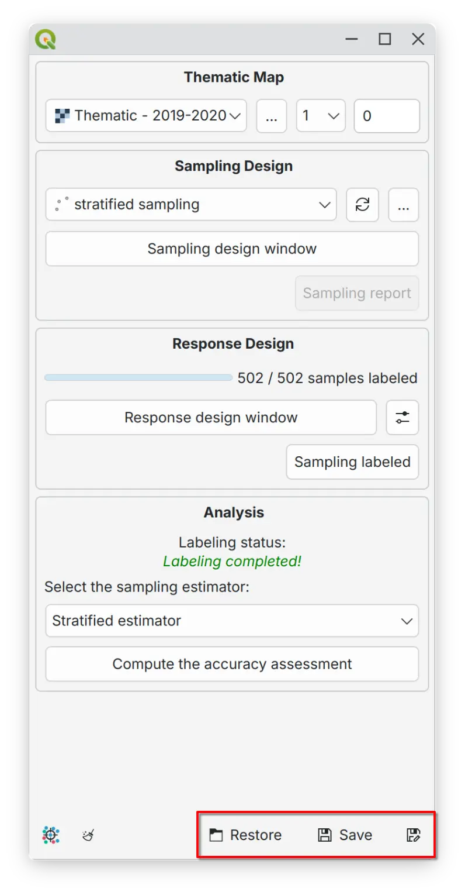

Session Persistence#
{kind=link}

AcATaMa supports session persistence through save and restore functionality that captures your complete workspace state. This capability is essential for multi-session workflows where you need to maintain consistency across accuracy assessment periods.
Resume capability - resume work exactly where you left off, maintaining consistency across sessions by preserving the sampling design and report, response design configuration, labeling progress, and workspace setup
Team collaboration - share standardized configurations to ensure uniform assessment methodology
Tip
Inside the configuration YAML file, AcATaMa saves relative paths for all layers configured with respect to the YAML file’s location, but only when those layers are in the same directory or a subdirectory of the YAML file. This ensures the project remains portable and easy to share.
Tip
Web/network layers - AcATaMa can save and restore web or network layers (Google, Esri, Google Earth Engine, XYZ, Postgresql, etc.), but for advanced configurations, load the QGIS project first and then load the AcATaMa configuration file (.yaml).